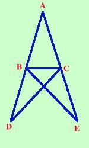
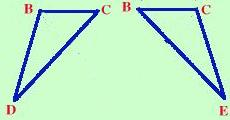

|
Se un triangolo ha due lati congruenti allora ha congruenti anche gli angoli opposti ai lati congruenti Scriviamolo in modo geometrico: ipotesi, tesi e figura corrispondente  Ipotesi
Tesi
Nota sulla dimostrazione Prolungo i lati AB ed AC oltre B e C di due segmenti congruenti BD e CE. Ora considero i triangoli ADC ed ABE (per comodita' te li estraggo nella figura a fianco); essi hanno: AB = AC per ipotesi AD = AE perche' somma di segmenti uguali L'angolo in A uguale perche' in comune Quindi i due triangoli sono congruenti per il primo criterio ed in particolare avranno congruenti l'altro lato e gli altri angoli DC=BE ACD=ABE ADC=AEB Considero ora i triangoli BDC e BEC;  essi hanno BD=CE per costruzione (li ho costruiti congruenti) DC=BE perche' appena dimostrato gli angoliBDC=BEC perche' appena dimostrato (corrispondono a ADC=AEB) Quindi i due triangoli sono congruenti per il primo criterio di congruenza ed in particolare avranno gli angoli BCD e CBE congruenti. Ora consideriamo gli angoli ABC ed ACB: essi sono congruenti perche' differenza degli angoli congruenti ACD e ABEcon gli angoli congruenti BCD e CBE ACD - BCD = ACB ABE - CBE = ABC Come volevamo dimostrare Da notare che per il teorema diretto e' sufficiente usare il primo criterio; infatti quando studiavo io veniva trattato subito dopo il primo criterio di congruenza; poi si e' preferito metterlo dopo il secondo criterio assieme al suo inverso in modo da formare quasi un unico teorema |
|||||||||||||||||

|

|

|

|